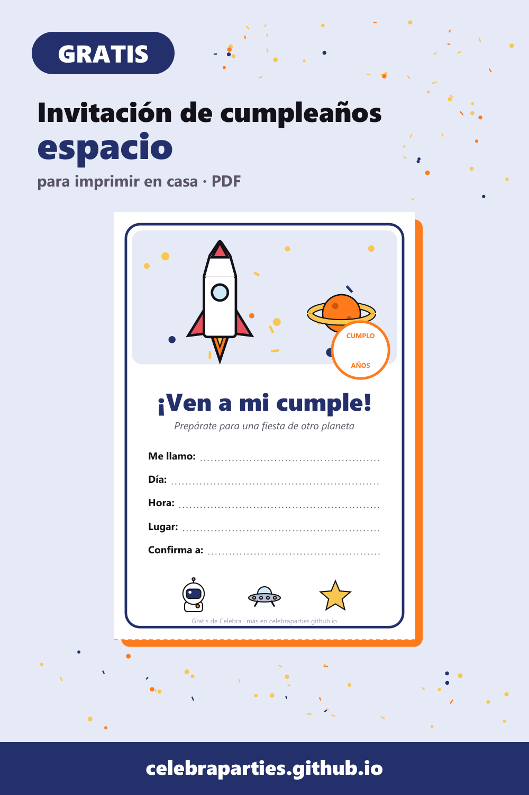

Invitación de cumpleaños del espacio gratis para imprimir (cohetes, planetas y astronautas)

Cohetes, planetas y un astronauta en cada invitado: el cumple del espacio es fácil de montar y queda espectacular con la luz apagada. Aquí tienes la invitación gratis y el plan de vuelo.
Descarga la invitación gratis
PDF con 4 invitaciones por hoja (A6), con hueco para el nombre, la edad, el día, la hora, el lugar y a quién confirmar.
Descargar la invitación del espacio gratis (PDF)
Decoración de otro planeta
- Cielo estrellado: estrellas fosforescentes en el techo y la luz baja. Si tenéis un proyector de estrellas, este es su día.
- Planetas colgantes: globos de colores de distintos tamaños colgados a diferentes alturas.
- Base de lanzamiento: una caja de cartón grande pintada de cohete para hacerse fotos dentro.
Juegos espaciales (de 4 a 9 años)
- Cuenta atrás: todos agachados, cuentan de 10 a 0 y en el «¡despegue!» saltan lo más alto posible.
- Rescate de alienígenas: esconde muñequitos verdes por la casa y dales linternas para encontrarlos a oscuras.
- Paseo lunar: caminar con un globo entre las rodillas sin que se caiga.
Merienda galáctica
«Rocas lunares» (palomitas), «planetas» (bolas de melón y sandía) y batido «vía láctea» de vainilla.
El pack completo
El pack de cumpleaños del espacio incluye:
- las invitaciones;
- cartel de bienvenida;
- banderín «FELIZ CUMPLE»;
- 12 toppers;
- 12 etiquetas de «¡Gracias por venir!».
Todo por 5 €, con descarga inmediata.